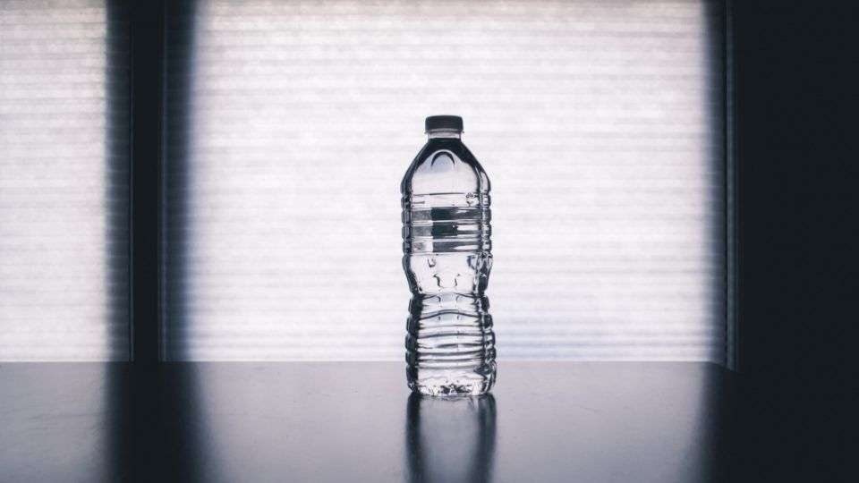

Que mettre dans un kit d'urgence ?
Un kit d'urgence aide à faire face aux 72 premières heures d'une situation de crise en attendant l'organisation des secours ou les consignes des autorités. Voici ce qu'il doit contenir, sans rien acheter d'inutile.

Pas besoin de tout faire aujourd'hui. En 15 minutes, vous pouvez déjà :
- Réunir 6 litres d'eau par personne
- Poser une lampe et des piles dans une boîte
- Glisser vos médicaments et une copie des ordonnances
Chaque petit pas compte.
Les 6 familles d'objets à prévoir
Eau et nourriture
- 6 litres d'eau potable par personne (environ 2 litres par jour)
- Conserves et aliments qui se mangent sans cuisson
- Ouvre-boîte, couverts, nourriture pour bébé ou animaux si besoin
Lumière et chaleur
- Lampe de poche et piles de rechange
- Couverture de survie, vêtements chauds
- Briquet ou allumettes
Information
- Radio à piles ou à manivelle
- Chargeur et batterie externe chargée
- Liste écrite des numéros utiles
Santé
- Trousse de premiers secours
- Traitements en cours et ordonnances
- Lunettes de rechange, produits d'hygiène
Papiers et argent
- Copies ou version numérique sécurisée des papiers d'identité, ordonnances et documents essentiels dans une pochette protégée.
- Un peu d'argent liquide
- Double des clés
Pour chacun
- De quoi occuper les enfants
- Ce qu'il faut pour une personne âgée ou handicapée du foyer
- Sifflet pour signaler sa présence
Adapter le kit à votre foyer
Les quantités dépendent du nombre de personnes et des besoins de chacun : bébé, traitement médical, animaux. L'appli Tous prêts calcule l'eau et la nourriture pour votre foyer. Pour les cas particuliers, voir famille, appartement, voiture.
Où le ranger et quand le vérifier
Rangez-le dans un endroit facile d'accès, connu de tout le foyer. Vérifiez régulièrement le contenu du kit (par exemple deux fois par an) : dates de péremption, piles, médicaments et coordonnées utiles. La checklist à imprimer aide à faire le point.
Informations pratiques, sources officielles (guide « Tous responsables » (SGDSN, 2025)). Elles ne remplacent pas les consignes des autorités. En cas d'urgence, appelez le 112 et suivez les consignes de la préfecture, de la radio et de FR-Alert.
Questions fréquentes
Combien d'eau prévoir dans un kit d'urgence ?
Environ 6 litres par personne pour 72 heures, soit 2 litres par jour pour boire et un peu d'hygiène.
Faut-il acheter un kit tout fait ?
Non. La plupart des objets sont déjà chez vous. Il n'existe pas de kit officiel vendu par l'État.
Quelle différence avec un sac d'évacuation ?
Le kit sert à tenir chez soi ; le sac de secours est la partie qu'on emporte si l'on doit partir vite. Voir la page Sac de secours.
À lire aussi
 Kit de survie 72 h : la listeListe complète du kit d’urgence 72h du gouvernement : eau, nourriture, radio, trousse… Version claire + checklist interactive gratuite adaptée à votre foyer.
Kit de survie 72 h : la listeListe complète du kit d’urgence 72h du gouvernement : eau, nourriture, radio, trousse… Version claire + checklist interactive gratuite adaptée à votre foyer.
